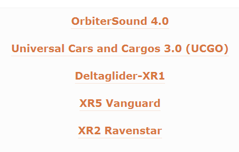
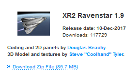
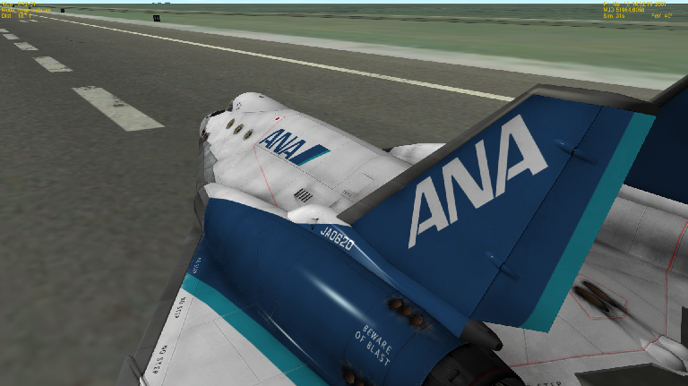

XR2 Ravenstarのダウンロード+インストール
XR2は、初期機体のDelta Gliderと比べて非常に壊れやすく、航続距離が短い機体です。
それだけに、パイロットにはより高い技量が求められます。
DeltaGliderに飽きて、より難しい機体に挑戦したいプレイヤーにおすすめです。
ダウンロード
Orbiter2010対応版
Software ? Orbiter Multiplayer Project

Orbiter2016対応版
Altea Aerospace - Downloads

インストール
ダウンロードしたXR2のファイルを解凍して、Orbiterのインストールフォルダに上書きするだけ。
必要なファイル
Orbiter2010
Orbiter2010でXR2を利用する場合、UMMUというMODが必要です。
まだUMMUを導入していない場合は、あらかじめインストールしてください。
UMMU+UCGOのダウンロード・インストール
Orbiter2016
Orbiter2016では、UMMUは必要ありません。
見た目（スキン）の変更
ユーザーの作成したMODを導入して、XR2の見た目を変えることができます。
ただし、ゲーム内のシナリオエディタでは変更できません。

（画像はRiver CrabさんのXR2J ANA skin v1.1をお借りしました。）
XR2のスキンを変更するには、まずセーブしてシナリオファイル※を作成する。
※Scenariosフォルダ内に作成される、拡張子が.scnのファイルのこと。シナリオエディタ 番外編 （シナリオファイルの直接編集）
これをメモ帳などの適当なテキストエディタで開く。
BEGIN_SHIPSの下にある、XR2Ravenstarの項目にSKIN （使いたいスキンの名前）の行を追加・変更する。

ノーマルマップの追加
ノーマルマップを追加すると、船体表面の凹凸が再現されます。
ダウンロード
Normal Maps Pack for XR-2 Ravenstar
インストール
ダウンロードしたファイルを解凍して、中に入っているファイルをすべてコピーする。
Textures\XR2Ravenstarフォルダを開いて、コピーしたファイルを貼り付ける。
スキンと併用する
以下の2つのファイルをコピーする。
- top_hull_colour_XR2_paint_norm.dds
- bottom_hull_norm.dds
Textures\XR2Ravenstar\Skins\（スキンの名前）フォルダを開いて、コピーしたファイルを貼り付ける。